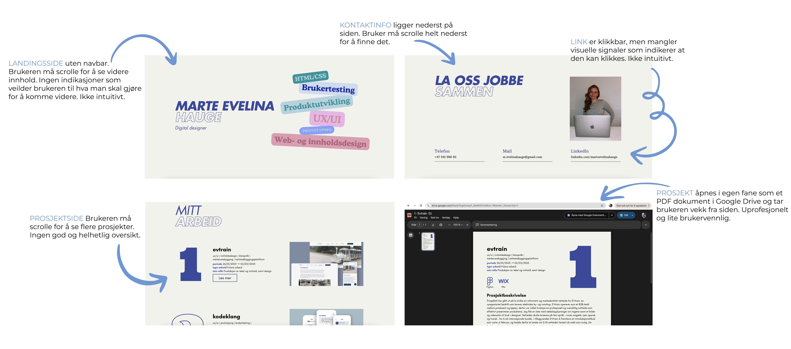
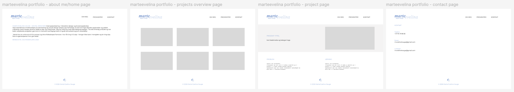
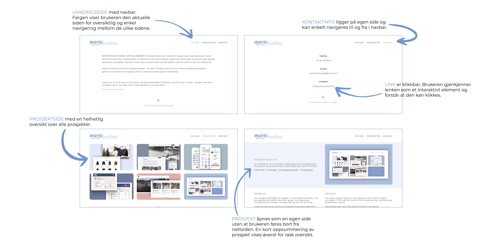

MARTEEVELINA.NO
Ny nettside for min portefølje. Redesignet for et profesejonelt, brukervennlig og personlig uttrykk. Kodet selv med HTML/CSS.
HTML/CSS • UX/UI design • Innholdsproduksjon • Prototyping
Verktøy: Figma, VScodese

Problem
Min tidligere portefølje var bygget i Canva Website Builder, noe som gjorde det enkelt å komme i gang,
men begrenset mulighetene for design, interaktivitet og teknisk utvikling.
Derfor ønsket jeg å utvikle en portefølje med egen kode som kombinerer godt UX-design med teknisk gjennomføring for en bedre og mer helhetlig brukeropplevelse.
Løsning
For å løse utfordringene har jeg designet og utviklet en egen portefølje i HTML og CSS,
med et mer brukervennlig, oversiktlig og profesjonelt uttrykk.
Ved å kode siden selv fikk jeg full kontroll over design, funksjonalitet og interaksjoner, samtidig som
jeg får vist fram tekniske kunnskaper og et design som representerer min personlige stil godt.
Prosess
Problemforståelse
Gammelt design:
Den opprinnelige porteføljen besto av én lang side hvor brukeren må scrolle langt ned for å komme gjennom hele siden.
De ulike prosjektene åpnet som PDF-dokumenter i en ny fane. Dette ga en lite sømløs brukeropplevelse og førte brukeren
bort fra nettsiden.

Idégenerering
For å komme i gang med idéer til design og layout har jeg søkt etter inspirasjon på bl.a Pinterest, Dribbble og Behance, som alle er plattformer for inspirasjon og deling av kreativt arbeid. Disse plattformene er et av mine absolutt viktigste verktøy for inspirasjon og idégenerering og gjør at jeg raskt kan skape et bilde av hvordan jeg ønsker at mitt egne design skal se ut. I dette prosjektet har jeg laget et moodboard og tatt elementer fra mine favoritter for å sette sammen et eget design.
Prototype
Før utviklingen startet, utarbeidet jeg en prototype i Figma for å visualisere nettsidens struktur og brukeropplevelse. Dette ga meg mulighet til å teste ulike designvalg og iterere på layout og navigasjon før implementering i HTML og CSS. Prototypen fungerte som et veikart gjennom utviklingsprosessen og bidro til en mer effektiv og gjennomtenkt løsning.

Resultat
Nytt design:
Den nye porteføljen er redesignet med fokus på en ren, oversiktlig og brukervennlig opplevelse.
Informasjonsarkitekturen er forbedret ved å dele innholdet i tydelige kategorier og egne prosjektsider,
noe som gir en mer intuitiv navigasjon enn den tidligere løsningen. Samtidig er designet bevisst holdt minimalistisk,
med god bruk av whitespace, tydelig visuell hierarki og uten forstyrrende elementer, slik at oppmerksomheten rettes
mot prosjektene og innholdet.

Refleksjon
Selv om denne løsningen er noe mer tidkrevende enn å bruke en ferdig nettsidebygger, gir den betydelig større fleksibilitet og kontroll over design og funksjonalitet. Samtidig bidrar det kontinuerlige arbeidet med å oppdatere og videreutvikle porteføljen til at jeg opprettholder og styrker mine ferdigheter innen frontendutvikling, ettersom jeg vil oppdatere siden jevnlig med mine nyeste prosjekter og erfaringer.
Videre utvikling
Porteføljen er et prosjekt i kontinuerlig utvikling, og jeg ønsker å videreutvikle både design,
funksjonalitet og brukeropplevelse over tid. Et viktig fokus fremover vil være å optimalisere
responsiviteten, slik at nettsiden fungerer sømløst på tvers av ulike skjermstørrelser og enheter.
Jeg ønsker også å utforske og implementere flere tekniske erfaringer med HTML, CSS og JavaScript.
På denne måten blir porteføljen ikke bare en presentasjon av prosjektene mine, men også en praktisk
demonstrasjon av mine ferdigheter innen frontendutvikling. Samtidig gir den meg muligheten til å
kontinuerlig utfordre meg selv, tilegne meg ny kunnskap og holde ferdighetene mine oppdatert.